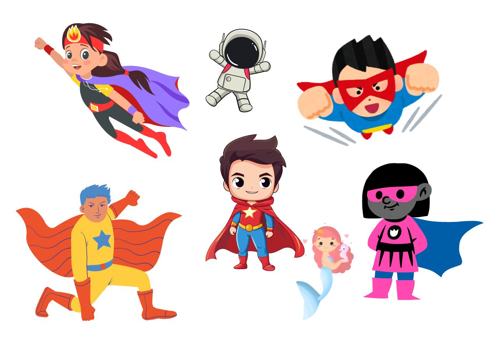

We all like superheroes and always wanted to be like one.
Now imagine you're a superhero, soaring through the sky or battling a
fearsome villain. How would you describe your actions?
You might say, "I flew swiftly" or "I fought bravely." Those words that
tell us how you did something are called adverbs.
In very simple language, an adverb is a word that describes a verb.
They add depth and excitement to our language by describing verbs,
adjectives, and even other adverbs.